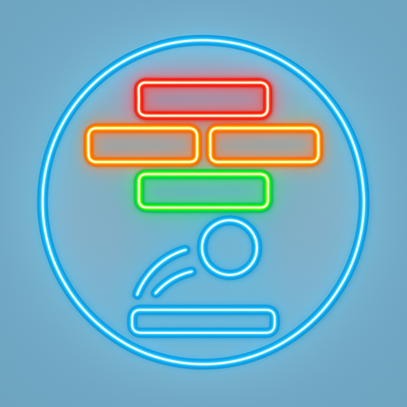
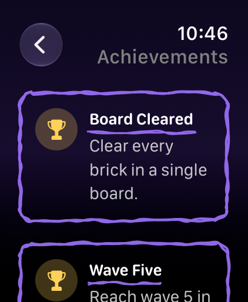
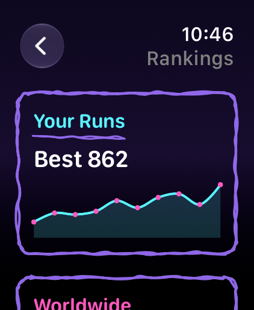
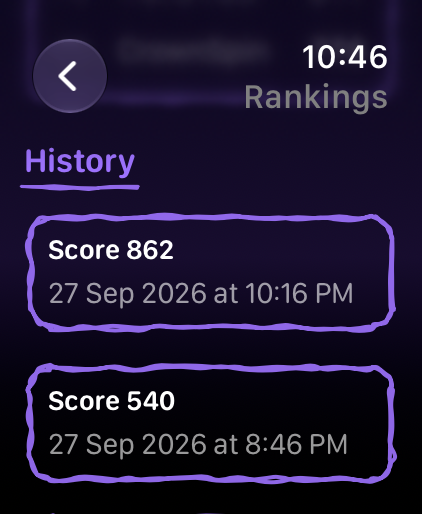
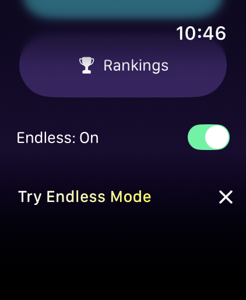

Brick Breaker: Watch Arcade
Global Wrist Leaderboards · App Store · updated 17 October 2026
What is new
Rankings and Achievements on Apple Watch: a trend line of the last 10 runs, a History list with date and time, a Worldwide Game Center board, and six achievements with progress bars. Siri can read the best score back without opening the app.
Facts
- Version
- 2.0 (build 2026092701), built with Xcode 27.x (exact minor not recorded for this build)
- Platforms
- Apple Watch only (watchOS 11.4 or later)
- Languages
- English (the interface is English only in 2.0)
- Price
- See the App Store page
- Privacy
- Runs are saved on the watch first; Game Center sign-in is optional
- Accessibility
- The score trend chart and the game over card have VoiceOver labels. The play field has no VoiceOver description.
- Window
- Winter break, 19 December 2026 to 4 January 2027, and the first week of January, 26 December to 10 January
- Developer
- One developer, Dubai
Screens
Device captures of the screens described in the nomination. No marketing frames.




Why now
- Ministry of Education announces the academic calendar for the next three years UAE Ministry of Education, winter break 14 December 2026 to 3 January 2027
- UAE School Holidays 2026-27: October Half-Term Dates, Winter Break and Full Academic Calendar Guide Gulf News, updated 7 September 2026